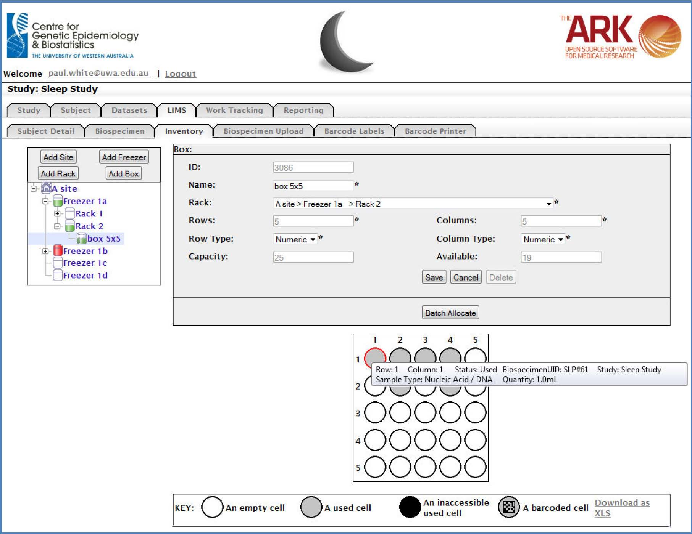

Overview
Data is the primary asset of biomedical researchers, and the engine for both discovery and translational medical research. As the sensitivity and volume of research data increases, for example due to new technologies such as ‘next-generation’ sequencing of human specimens linked to clinical datasets, so too does the requirement for access to application software for managing, integrating and interrogating the different types of research data. Researchers often need to execute complicated queries and conduct analyses across multiple data types, such as phenotypic, genotypic, pedigree and biospecimen data.
The Ark project was established within the Centre for Genetic Epidemiology & Biostatistics at the University of Western Australia in late 2009 to develop an open-source platform to support Australian and International biomedical researchers. The objective of The Ark project is to provide a suite of secure, integrated web-based tools that incorporate the majority of the application functionality required to conduct a complex study or clinical trial. These tools will enable both clinical and basic science researchers, who collect and use clinical specimens and health information from any disease type, to better comprehend how underlying genetic variations/mutations interact with environmental factors to cause disease.
Capability
As of October, 2012, The Ark has deployed the following functionality into production:
• Biospecimen Management. The software has been designed to be highly configurable through the browser-based graphical user interface so that most study designs can be accommodated without the need for code changes. One instance of the software securely supports multiple research studies and multiple users so a group or institution only needs to deploy one instance of the software to support a wide range of studies. The goal of the NeCTAR-funded Cloud-based Bioinformatics Tools project is to extend the existing functionality and to make The Ark available to the broader Australian research community. The Cloud-based Bioinformatics Tools project is a collaboration between the Centre for Genetic Epidemiology & Biostatistics at The University of Western Australia, The Centre for Mega Epidemiology at Melbourne University, St John of God Hospital, and The Clinical Oncological Society of Australia (COSA).
Additional functionality under development and scheduled for production deployment between October 2012 and March, 2013 includes:
• A genotypic data management module. The Ark is currently deployed on Nectar Server Program hardware as a hosted solution for groups that don’t want the burden of managing their own hardware but,
being open source, can be deployed at no charge on other hardware.